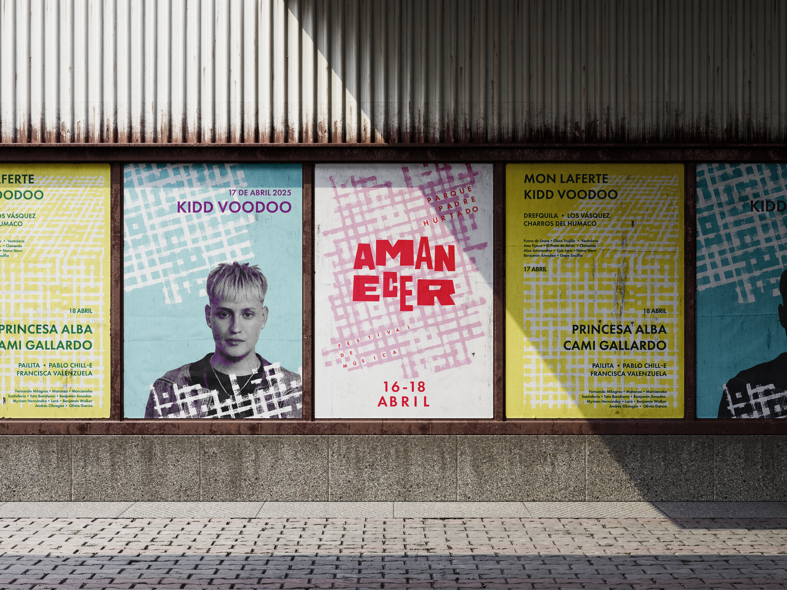
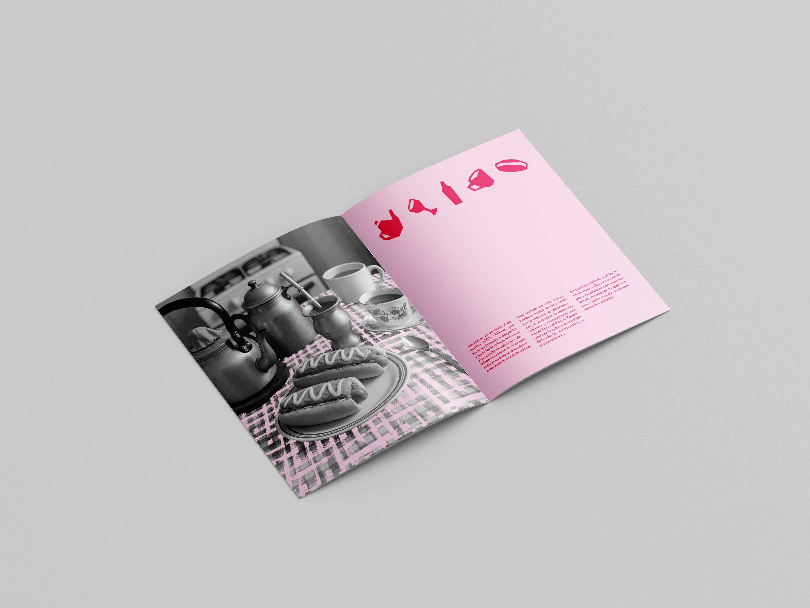
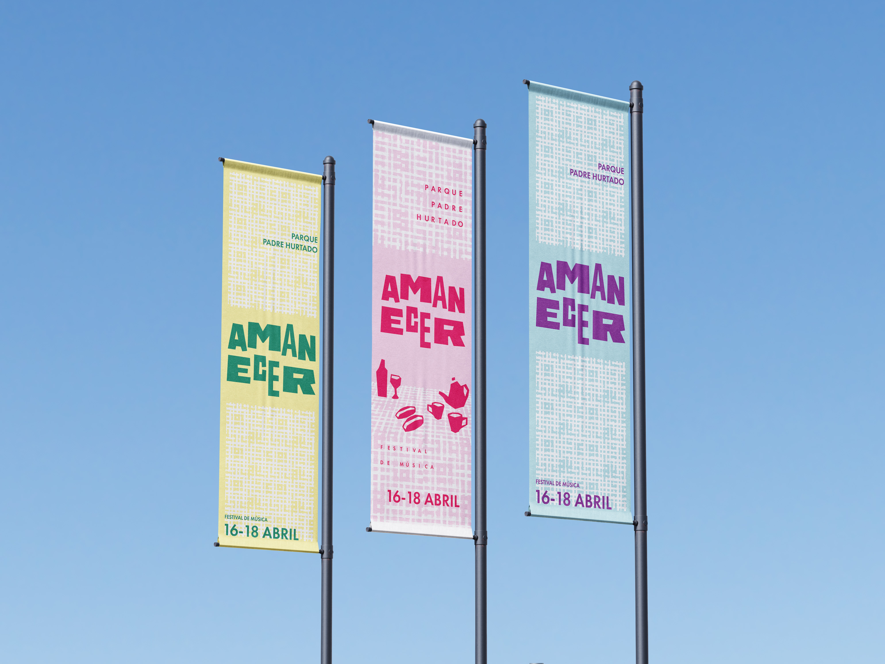
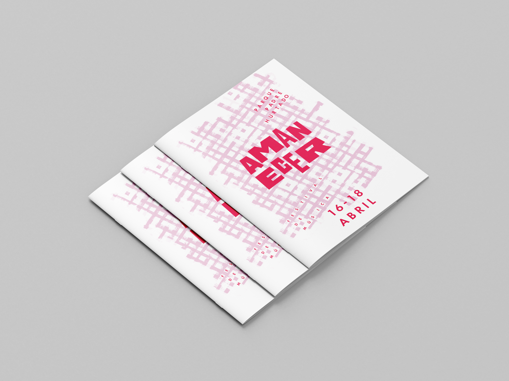
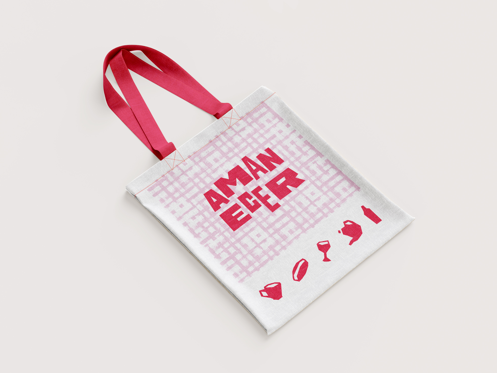

FestivalAmanecer
Descripción del encargo
El encargo consistía en seleccionar un festival existente y reinterpretar su concepto dentro del contexto chileno. Para este proyecto elegimos Austin City Limits, festival que destaca por reunir artistas locales y representar la identidad cultural de Austin.
Descripción de la propuesta
A partir de ese referente, reinterpretamos el festival desde la idea de la mesa chilena como espacio de encuentro, identidad y celebración. El branding busca trasladar la diversidad cultural y musical de Chile a una experiencia visual cercana, incorporando códigos gráficos inspirados en nuestras tradiciones y formas de compartir.



